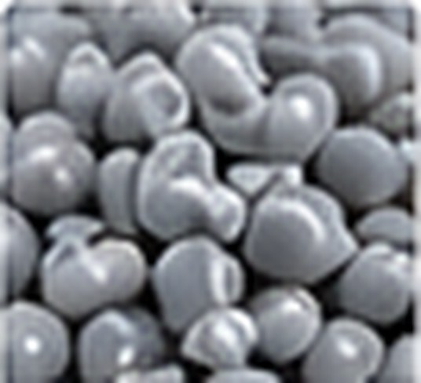

Black

RECOVERED PRODUCT VIEW
HIPS Recycled Granules
Product image recovered from the earlier Singhal Plastics website presentation. Contact us for current grade, colour and availability.
RECYCLED POLYMER · HIPS
Recycled HIPS
Recycled high-impact polystyrene for moulded parts, sheets and suitable industrial applications.
AVAILABLE GRADES
HIPS Recycled Granules
Recycled high-impact polystyrene for suitable moulded, sheet and industrial applications. Share your application and quantity to discuss current availability.
Milky
MATERIAL ENQUIRY
Need a particular MFI or colour?
Tell us the grade, MFI, colour, process, application and monthly requirement. We will discuss the suitable available material.
Factory: B-2420, DSIIDC, Narela, Delhi – 110040
Sales Office: Block I-111, Main Road, Kirti Nagar, New Delhi – 110015